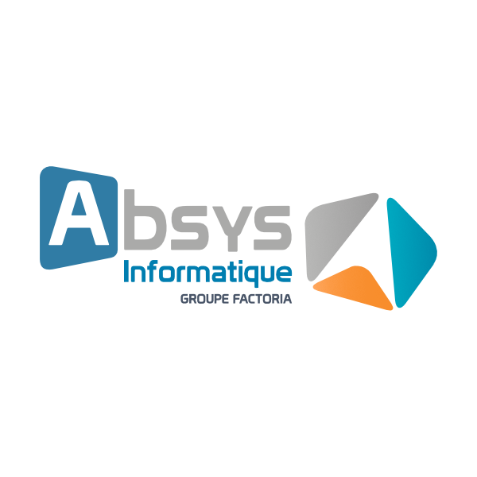
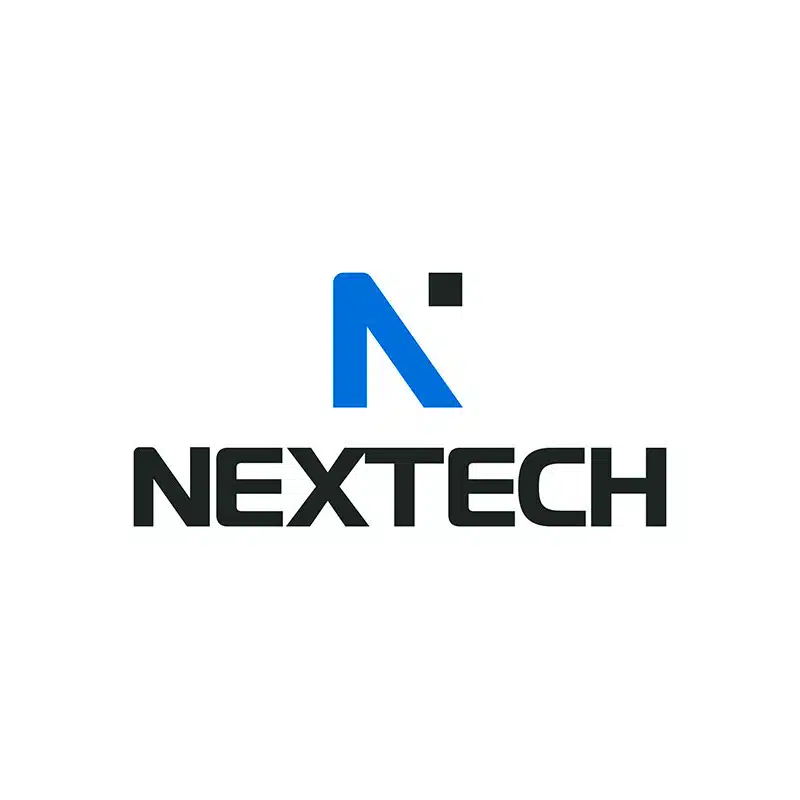
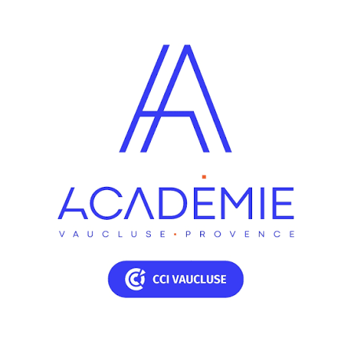

Alternant Systèmes & Réseaux, Bac+5 Cybersécurité
Je protège les systèmes que je construis : quatre ans d'alternance à administrer des infrastructures, cinq ans d'études pour les défendre.
Étudiant en Manager en Ingénierie Informatique, parcours Cybersécurité (Bac+5), je travaille en alternance depuis 2022 comme technicien Systèmes & Réseaux. J'y gère au quotidien la hotline, les sauvegardes, les accès distants et les environnements Microsoft 365.
Cette expérience de terrain nourrit ma spécialisation : je m'oriente vers l'audit et le pentest, je pratique les CTF et je prépare l'OSCP. Mon objectif est de comprendre une infrastructure assez bien pour la construire, puis assez bien pour l'attaquer.

AIHotline, supervision, sauvegardes, Microsoft 365 et accès distants pour les clients — en parallèle de mes études, du BTS au Bac+5.
Voir le détail →
NTNextech, Avignon. Infrastructure multi-sites, virtualisation, annuaire et réseau.
Voir le détail →
CCICCI Vaucluse / ESIEE-IT. Développement applicatif avec une approche sécurité dès la conception.
Voir le détail →CCI Vaucluse / ESIEE-IT. Bac+5 : audit, pentest, gouvernance et sécurité des systèmes d'information.
Voir le détail →